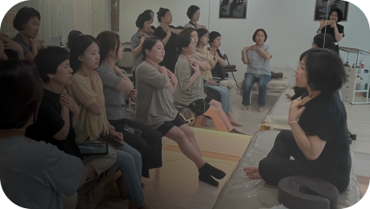
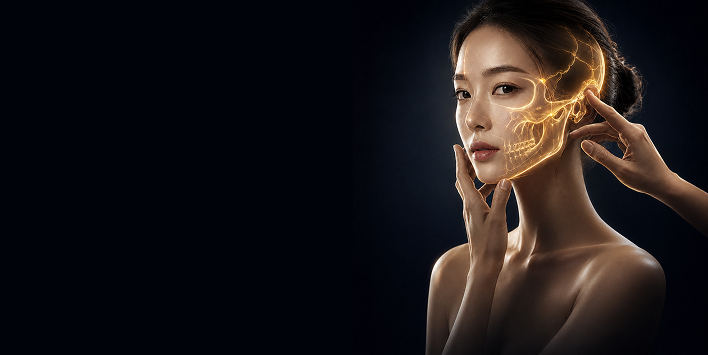
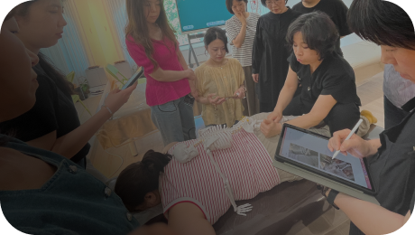
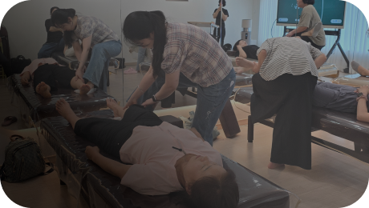

구조 진단
비대칭을 만든 연결과
패턴을 읽는 기술
축적된 임상 경험과 깊이 있는 전문성을 바탕으로,
두골비체의 철학과 기술을 현장 중심의 교육으로 전합니다.

구조진단부터 근본 교본교정까지, 흔들림 없는 하나의 솔루션
임시 방편이 아닌, 완결된 비대칭 관리 시스템 얼굴을 피부가 아닌
구조로 봅니다.
보이는 비대칭을 쫓지 않고, 그 비대칭을 만든 연결과 패턴을 읽습니다.
두골비는 얼굴에서 시작해 몸의 균형까지 바라보는 수기 테크닉입니다.
구조를 정확히 진단하고, 근본부터 교정하며
얼굴에서 몸까지 연결된 균형을 함께 살핍니다.

비대칭을 만든 연결과
패턴을 읽는 기술

임시 방편이 아닌
완결된 교정 시스템

얼굴에서 시작해
몸의 균형까지 바라보는 기술
단계별 체계적인 커리큘럼으로 전문성을 완성합니다.
| 3주 PART 01 |
비대칭의 유형과 판독
|
유형에 따른 관리 포인트
|
|---|---|---|
| 3주 PART 02 |
두개골의 봉합 근막두개골을 이루는 각 뼈와 봉합, 근막의 연결 관계를 이해하고, 얼굴의 비대칭과 움직임에 영향을 미치는 구조적 연결을 파악합니다. |
머리와 연결된 흉곽의 비대칭머리와 흉곽의 구조적 연결을 이해하고, 흉곽의 비대칭이 머리와 얼굴의 균형에 미치는 영향을 파악합니다. |
| 3주 PART 03 |
안면 거상의 비밀안면 구조와 근막의 연결을 이해하고, 얼굴의 자연스러운 리프팅 원리를 익힙니다. 안면 신경 가동술안면 신경의 연결 구조를 이해하고, 얼굴의 움직임과 균형을 조절하는 방법을 익힙니다. |
구강 근막 밸런스구강과 안면 근막의 연결을 이해하고, 얼굴의 균형과 움직임을 조절합니다. 코어 근막 밸런스코어를 중심으로 전신의 근막 연결을 살펴보고, 무너진 신체 정렬과 움직임의 균형을 회복합니다. |
| 총 정리 1주 | ||